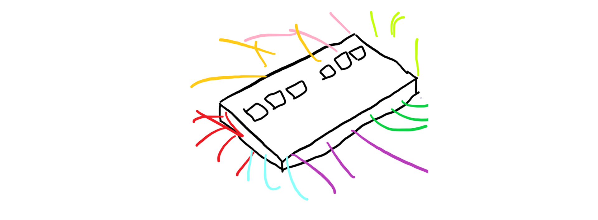
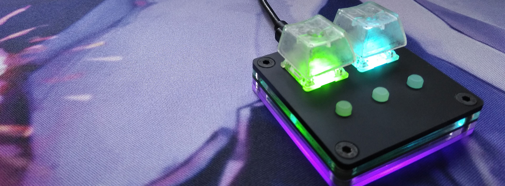
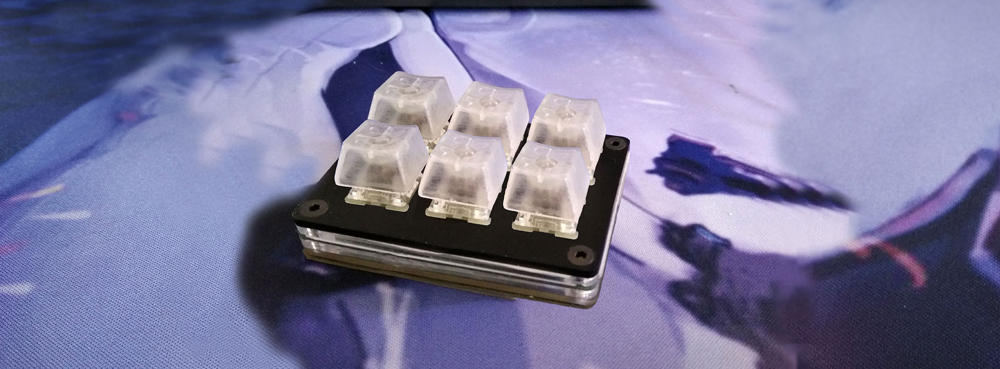

/* Antecer */
<!DOCTYPE html>
<html>
=======
<!doctype html>
<html class="animated fadeIn">
/* master */

<head>
	<title>Home</title>
	<meta name="viewport" content="width=device-width, initial-scale=1">
	<link rel="stylesheet" type="text/css" href="styles/default.css"/>
    <link rel="stylesheet" type="text/css" href="styles/sliderbox.css"/>
	<link rel="stylesheet" type="text/css" href="styles/home.css"/>
	<script src="script/jquery-3.1.1.min.js"></script>
/* Antecer */
    <script src="script/koala.min.1.5.js" type="text/javascript"></script>
</head>

<body>
	<iframe src="head.html" style="min-width: 1080px; width: 100%; height: auto;" frameborder="0" scrolling="no"></iframe>
	<div id="sliderBox" class="focus">
		<div id="picBox">
			<div class="fcon">
				
				<!--<span class="shadow"><a  href="#">描述文字</a></span>-->
			</div>
			<div class="fcon">
				
			</div>
			<div class="fcon">
				
=======
	<link href="styles/main.css" rel="stylesheet" type="text/css" />
	<link href="styles/animate.css" rel="stylesheet" />
</head>

<body class="bodyindex">
	<iframe src="head.html" width="100%"; height="auto" frameborder="0" scrolling="no" name="titleBar"></iframe>

	<div class="slideshow-container" id="indexgal">
		<a href="prod.html">
			<div class="mySlides fade">
				<div class="numbertext"></div>
				
				<div class="text"></div>
			</div>
		</a>
		<a href="prod.html">
			<div class="mySlides fade">
				<div class="numbertext"></div>
				
				<div class="text"></div>
			</div>
		</a>
		<a href="prod.html">
			<div class="mySlides fade">
				<div class="numbertext"></div>
				
				<div class="text"></div>
/* master */
			</div>
			<div class="DotsBox">
				<div class="Dots" id="Dots">
					<a href="javascript:void(0)" hidefocus="true" target="_self" class="">
						<i>1</i>
					</a>
					<a href="javascript:void(0)" hidefocus="true" target="_self" class="">
						<i>2</i>
					</a>
					<a href="javascript:void(0)" hidefocus="true" target="_self" class="">
						<i>3</i>
					</a>
				</div>
			</div>
			<!-- <span class="prev"></span> -->
			<!-- <span class="next"></span> -->
		</div>
	</div>
	<script type="text/javascript">
		Qfast.add('widgets', {
			path: "script/terminator2.2.min.js",
			type: "js",
			requires: ['fx']
		});
		Qfast(false, 'widgets', function () {
			K.tabs({
				id: 'sliderBox', //图片滑块容器  
				conId: "picBox", //滑块内容容器 
				tabId: "Dots", //小圆点容器
				tabTn: "a",
				conCn: '.fcon', //图片内容容器      
				auto: 1, //自动播放 1=true,0=false
				effect: 'fade', //图片切换效果
				eType: 'click', //鼠标点击事件
				pageBt: true, //是否有按钮切换页码
				bns: ['.prev', '.next'], //前后按钮配置class                          
				interval: 5000 //图片停顿时间  
			})
		})
	</script>

	<div class="footer">
		<p>Antecer</p>
	</div>
</body>

</html>
